🎯 Pourquoi ce chapitre ?
D'après le programme officiel tunisien (Thème 2, Objectif 2 — p.16), ce chapitre vise à :
📚 Préacquis
- Ch.1 — Les facteurs climatiques (T°, humidité, lumière, vent) font partie des facteurs abiotiques du biotope.
- Les êtres vivants sont adaptés aux conditions de leur milieu — ils présentent des caractères compatibles avec leur environnement.
- La photosynthèse des plantes vertes nécessite de la lumière et est influencée par la température.
- La transpiration des végétaux se fait par les stomates des feuilles et entraîne des pertes d'eau.
- Les mammifères ont une température interne constante (homéothermes) ; les reptiles ont une température variable (poïkilothermes).
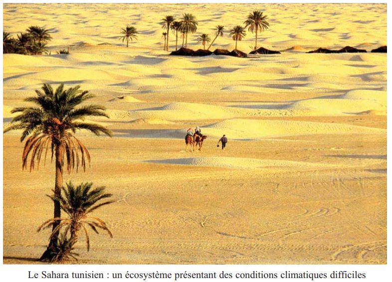
❓ 2 Questions directrices
- Comment les végétaux résistent-ils aux conditions climatiques défavorables ?
- Comment les animaux résistent-ils aux conditions climatiques défavorables ?
🧠 Comprendre avant de mémoriser
L'adaptation est la clé de survie dans un écosystème. Ce chapitre montre comment les êtres vivants s'ajustent aux 4 facteurs climatiques majeurs : température, lumière, eau et vent. La logique est la même pour végétaux et animaux : face à un facteur défavorable, l'organisme développe des stratégies morphologiques (forme), anatomiques (structure interne) ou physiologiques (fonctionnement). La Tunisie, avec ses climats contrastés (Nord humide → Sahara aride), est le terrain d'étude idéal.
Clique sur chaque notion · Pièges CAPES et connexions révélés
🌡️ Adaptation à la température et à la lumière
Adaptation à la température :
| Stratégie | Exemple | Mécanisme |
|---|---|---|
| Feuilles caduques | Cerisier | Perte des feuilles → arrêt photosynthèse en hiver |
| Feuilles persistantes | Pin d'Alep | Aiguilles + cuticule → résistance au froid et à la sécheresse |
| Graines (plantes annuelles) | Coquelicot | Passe la mauvaise saison sous forme de graine |
| Organes souterrains | Ail (bulbe), Pomme de terre (tubercule) | Organe de réserve souterrain |
| Cycle très court (éphémérophytes) | Rose du désert | Cycle complet en quelques heures/jours |
Adaptation à la lumière :
| Type | Synonyme | Exemple |
|---|---|---|
| Plante de lumière | Héliophile | Tournesol, Pin d'Alep |
| Plante d'ombre | Sciaphile | Ortie, Fougère, Cyclamen |
💧 Adaptation aux conditions hydriques et au vent
| Type de plante | Milieu | Caractères adaptatifs |
|---|---|---|
| Hygrophyte | Milieu humide | Racines peu développées · Feuilles grandes et minces · Nombreux stomates |
| Xérophyte | Milieu aride | Voir tableau ci-dessous |
Adaptations des xérophytes :
| Objectif | Adaptation | Exemple |
|---|---|---|
| Augmenter absorption eau | Racines profondes (jusqu'à 6 m) ou très étendues | Olivier, Cactus |
| Réduire pertes d'eau | Cuticule imperméable · Stomates dans cryptes pilifères · Feuilles enroulées · Feuilles en épines | Olivier, Oyat, Laurier-rose, Cactus |
| Mettre eau en réserve | Tissus aquifères (tiges gonflées) | Cactacées, Zygophyllum |
Adaptation au vent :
| Milieu | Adaptation végétale | Exemple |
|---|---|---|
| Zone côtière exposée | Tiges minces et flexibles · Racines très développées | Oyat |
| Sommet de montagne | Port nain ou en coussinet | Hêtre nain |
| Vent dominant | Déformation asymétrique du port | Pin couché |
🐾 Adaptation des animaux
Face au froid :
| Stratégie | Animal | Type |
|---|---|---|
| Fourrure épaisse | Renard, Sanglier, Ours | Morphologique |
| Hibernation (T° interne ↓) | Hérisson, Marmotte | Physiologique |
| Hivernation (T° variable) | Serpents, Grenouilles, Escargot | Comportementale |
| Migration | Cigognes, Oies cendrées, Hirondelles | Comportementale |
Face à la chaleur :
| Stratégie | Animal | Type |
|---|---|---|
| Vie nocturne | Fennec, Scorpion | Comportementale |
| Grandes oreilles | Fennec | Morphologique |
| Urine très concentrée | Fennec, Dromadaire, Varan | Physiologique |
| Eau métabolique | Dromadaire | Physiologique |
| Glandes à sel | Varan du désert | Physiologique |
⚠️ 3 Pièges classiques CAPES
🔗 Connexions avec le manuel
Les facteurs climatiques introduits en Ch.1 sont ici étudiés dans leur action concrète sur les êtres vivants.
Les adaptations à l'eau et à la température expliquent la répartition des végétaux en Tunisie (Ch.3).
L'adaptation comportementale (vie nocturne) est liée à la disponibilité des proies.
La Tunisie offre un gradient écologique exceptionnel : forêt méditerranéenne → steppe → Sahara.
💭 Questions de réflexion
1. Action de la température
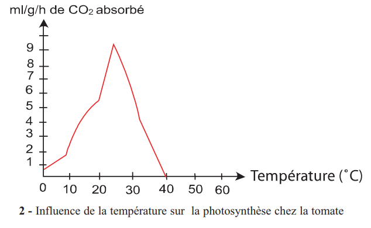
La photosynthèse est maximale à une température optimale. En dehors de cet optimum, elle diminue.
| Type de plante | Stratégie hivernale/estivale | Mode d'adaptation |
|---|---|---|
| Arbres à feuilles caduques (Cerisier) | Perte des feuilles en hiver → arrêt photosynthèse | Morphologique |
| Arbres à feuilles persistantes (Pin d'Alep) | Aiguilles + cuticule de cutine imperméable | Morphologique + Anatomique |
| Plantes annuelles (Coquelicot) | Passent la mauvaise saison sous forme de graines | Physiologique |
| Plantes herbacées vivaces (Ail, Pomme de terre) | Organes souterrains : bulbes, tubercules, rhizomes | Morphologique |
| Éphémérophytes (Rose du désert) | Cycle complet en quelques heures à quelques jours | Physiologique |
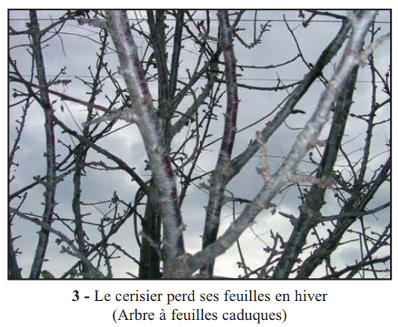
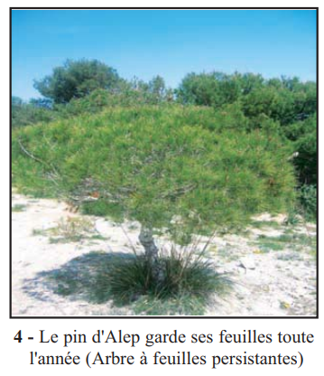
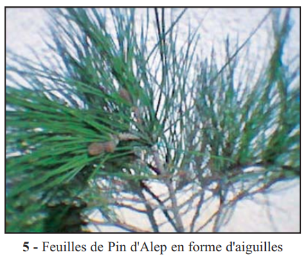
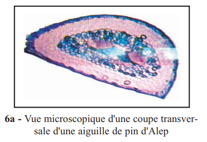
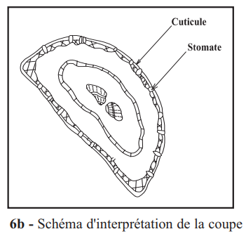
1. Le cerisier qui perd ses feuilles en hiver est un arbre à feuilles . En perdant ses feuilles, il .
2. La cuticule des aiguilles du Pin d'Alep est formée de qui isole la feuille de l'atmosphère → c'est une adaptation .
3. Les plantes qui réalisent leur cycle complet en quelques heures dans le désert s'appellent des .
2. Action de la lumière — héliophiles vs sciaphiles
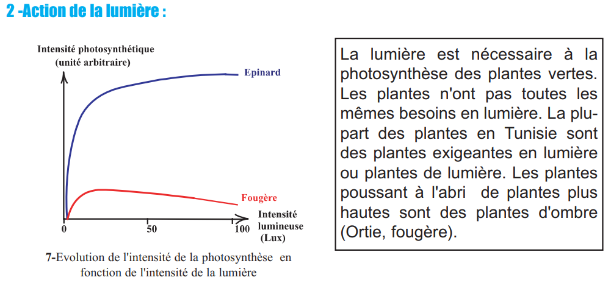
| Type | Nom scientifique | Besoin lumineux | Exemples |
|---|---|---|---|
| Plante de lumière | Héliophile | Élevé | Pin d'Alep, Tournesol, Alfa |
| Plante d'ombre | Sciaphile | Faible | Ortie, Fougère, Cyclamen |
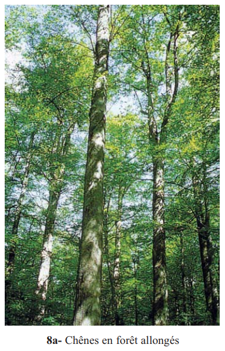
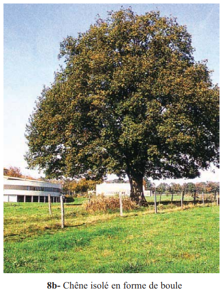
1. Une plante sciaphile est une plante .
2. Un chêne en forêt a un tronc allongé et dénudé à la base car .
3. Conditions hydriques — Xérophytes vs Hygrophytes
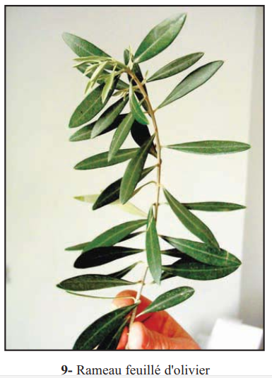
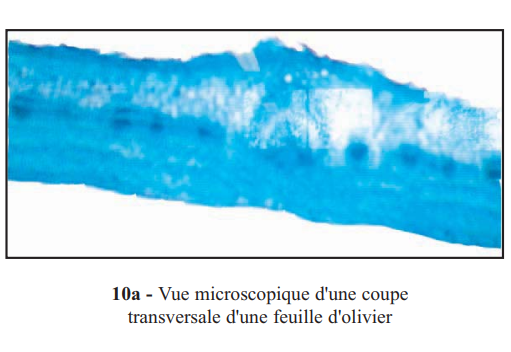
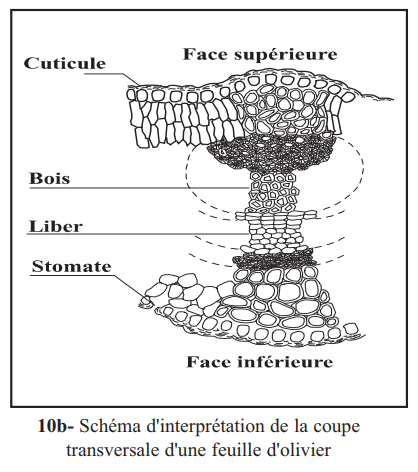
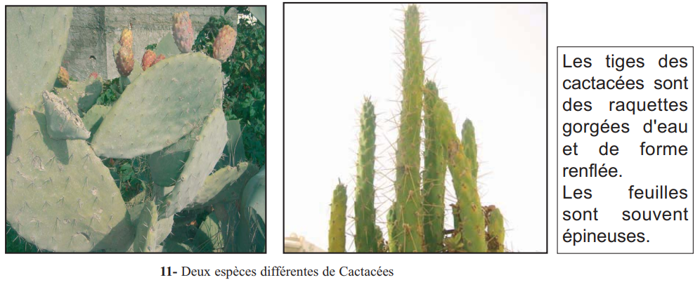
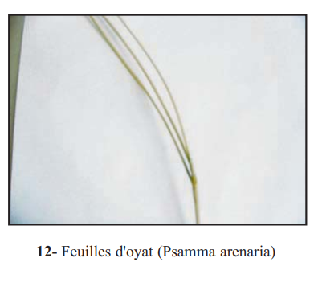
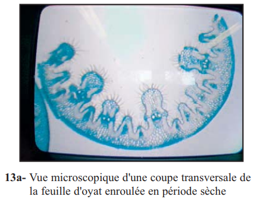
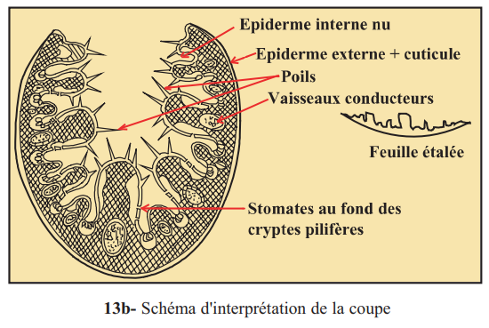
| Adaptation xérophyte | Type | Exemple |
|---|---|---|
| Racines profondes (jusqu'à 6 m) | Morphologique | Olivier |
| Racines très étendues (2–3× l'ombre) | Morphologique | Olivier |
| Cuticule imperméable (cutine) | Anatomique | Olivier, Oyat |
| Stomates dans cryptes pilifères | Anatomique | Oyat, Laurier-rose |
| Feuilles enroulées en période sèche | Morphologique | Alfa, Oyat |
| Feuilles transformées en épines | Morphologique | Cactus |
| Tissus aquifères (réserve d'eau) | Physiologique | Cactacées (raquettes) |
1. Les stomates de l'Oyat enfoncés dans des cryptes pilifères constituent une adaptation .
2. Les raquettes gorgées d'eau des Cactacées constituent une adaptation .
3. L'Oyat est utilisé pour fixer les dunes littorales grâce à ses .
4. Action du vent
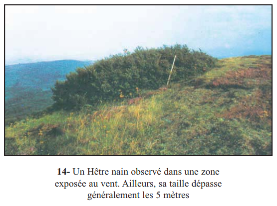
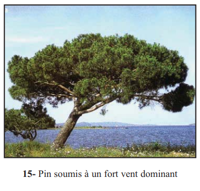
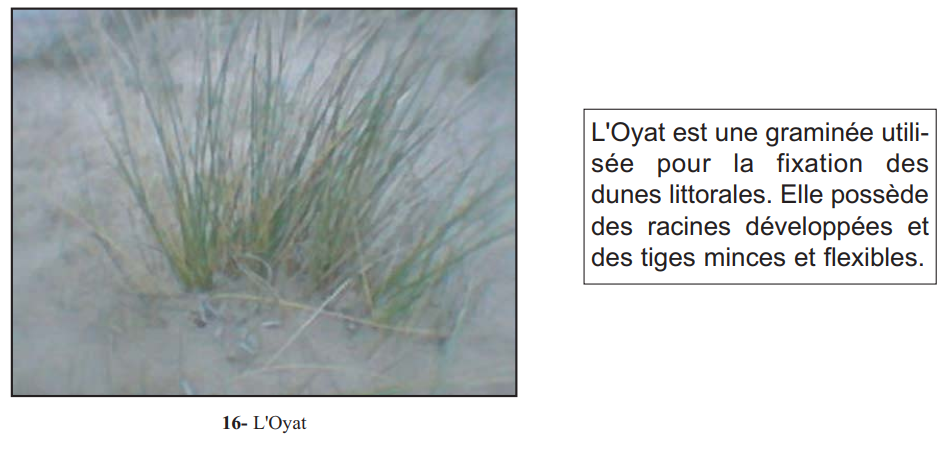
| Milieu | Adaptation végétale | Exemple |
|---|---|---|
| Zone côtière exposée | Tiges minces et flexibles · Racines très développées (fixation) | Oyat (fixation des dunes) |
| Sommet de montagne | Port nain ou en coussinet · Taille réduite | Hêtre nain |
| Vent dominant | Déformation asymétrique du port | Pin couché |
📌 Retenons — 3 types d'adaptation végétale
1. Action du froid — mammifères et autres animaux
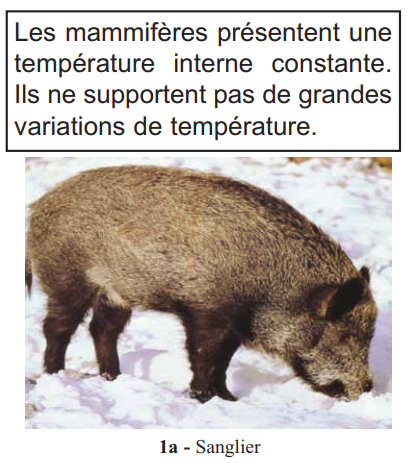
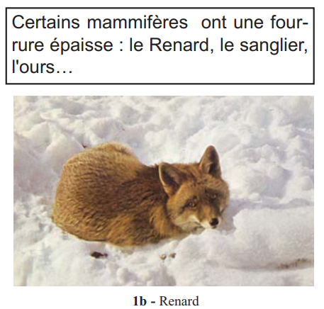
Animaux à température constante (homéothermes)
| Stratégie | Animal | Mode |
|---|---|---|
| Fourrure épaisse | Renard, Sanglier, Ours | Morphologique |
| Hibernation (T° interne ↓) | Hérisson (35°→10°C) Marmotte | Physiologique |
| Migration vers zones chaudes | Cigognes, Hirondelles, Oies cendrées | Comportementale |
Animaux à température variable (poïkilothermes)
| Stratégie | Animal |
|---|---|
| Hivernation (engourdissement passif) | Serpents, Grenouilles |
| Opercule calcaire (isolement) | Escargot |
| Chrysalide (membrane épaisse) | Piéride du chou (insecte) |
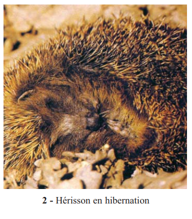
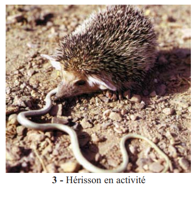
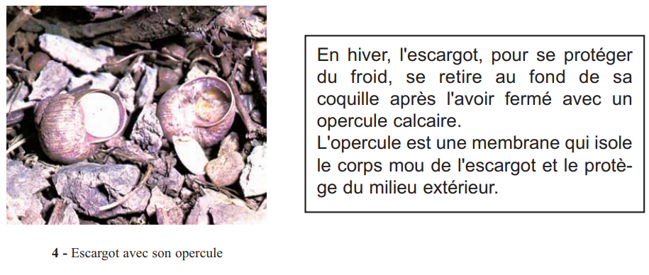
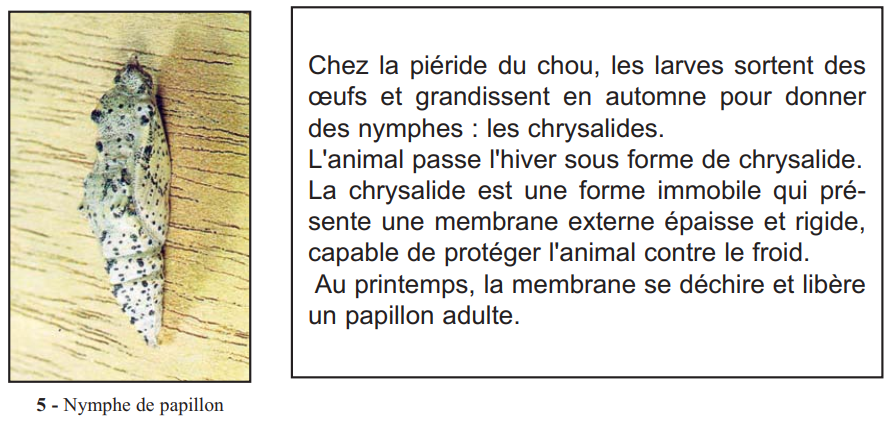
• Respiration : 40–50 → 9 fois/min
• Fréquence cardiaque : 190 → 20 battements/min
• Température interne : 35°C → 10°C
• Énergie : issue des graisses stockées sous la peau
• Perte de masse : 30% de sa masse totale à la fin de l'hiver.
1. L'hibernation du Hérisson est une adaptation .
2. L'hivernation du serpent se distingue de l'hibernation du Hérisson car le serpent .
3. Les cigognes qui quittent la Tunisie en hiver utilisent une adaptation .
2. Action de la chaleur et de l'aridité — animaux du désert
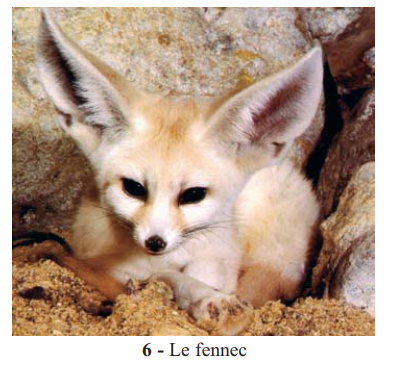
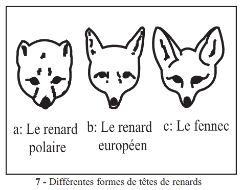
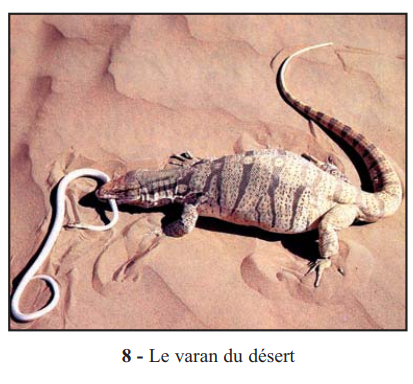
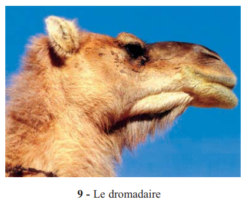
| Animal | Adaptation | Type |
|---|---|---|
| Fennec | Grandes oreilles (refroidissement par transpiration cutanée) | Morphologique |
| Fennec | Corps allongé (meilleure surface de transpiration) | Morphologique |
| Fennec | Urine très concentrée (réduction pertes d'eau) | Physiologique |
| Fennec, Scorpion | Vie nocturne (évite les heures chaudes) | Comportementale |
| Dromadaire | Eau métabolique (combustion graisses de la bosse) | Physiologique |
| Dromadaire | Transpiration déclenchée à 41°C seulement | Physiologique |
| Dromadaire | Cornets nasaux réabsorbent vapeur d'eau expirée | Anatomique |
| Varan du désert | Glandes à sel nasales (élimination sel → réabsorption eau) | Physiologique |
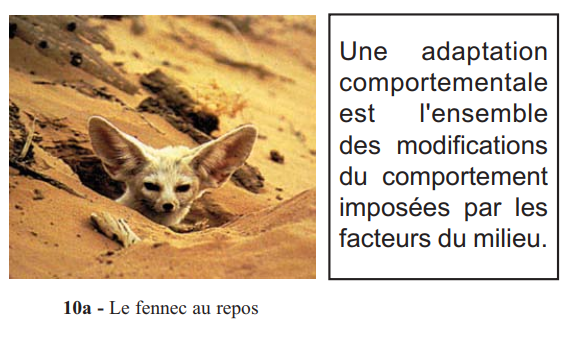
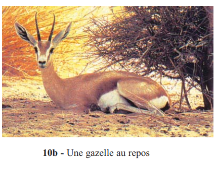
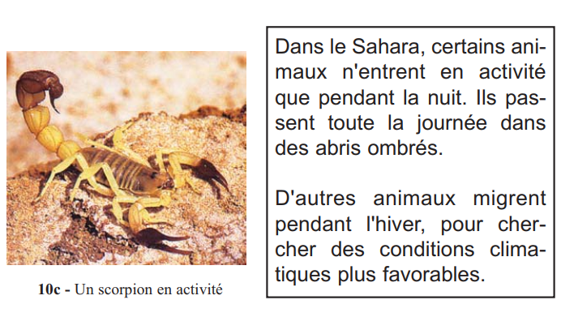
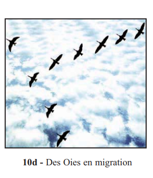
1. Les grandes oreilles du fennec permettent de .
2. L'eau métabolique du dromadaire est produite par .
3. La vie nocturne du Fennec et du Scorpion est une adaptation .
📌 Retenons — 3 types d'adaptation animale
1Les plantes résistent aux basses températures de différentes façons : les arbres à feuilles perdent leurs feuilles en hiver. Les plantes herbacées subsistent par des organes souterrains (bulbes, tubercules). Les plantes ne persistent que sous forme de graines. Les éphémérophytes ont un cycle de développement très .
2Selon les besoins en lumière, on distingue les plantes qui exigent une grande quantité de lumière, et les plantes qui se développent avec de faibles intensités lumineuses. Un chêne isolé a une forme en ; en forêt, son tronc est .
3Les plantes xérophytes sont adaptées aux milieux . Elles présentent des adaptations pour : augmenter l' ; réduire les pertes d'eau (cuticule, stomates dans , feuilles enroulées) ; mettre l'eau en réserve dans des .
4Face au froid, certains mammifères entrent en . Les animaux à température comme les serpents et les grenouilles passent l'hiver engourdis : c'est l'. D'autres animaux .
5Les animaux des zones arides présentent des adaptations : comportementales () ; morphologiques () ; physiologiques ().
🃏 Flashcards — Vocabulaire clé du chapitre
✏️ QCM — Format CAPES (1 à 3 bonnes réponses)
Questions du manuel (p.108) et questions complémentaires CAPES
📝 Exercices interactifs
Q1. Les plantes qui perdent leurs feuilles en hiver sont appelées :
Q2. Une plante sciaphile est une plante :
Q3. Les adaptations des plantes xérophytes pour résister au manque d'eau comprennent :
Q4. L'hibernation du Hérisson se traduit par :
Q5. La différence entre hibernation et hivernation est que :
🌵 Ex.1 — Adaptations de Zygophyllum au milieu aride (exercice 3, p.109)
| Caractère adaptatif | Objectif | Type d'adaptation |
|---|---|---|
| Système racinaire 20 000× le volume aérien | ||
| Poils fins emprisonnant la vapeur d'eau | ||
| Feuilles réduites gorgées d'eau | ||
| Port en coussinet (microclimat frais) |
🌹 Ex.2 — Adaptation du Laurier-rose au milieu aride (exercice 2, p.108)
La cuticule épaisse et cutinisée du Laurier-rose est une adaptation qui permet de . L'absence de stomates sur l'épiderme supérieur . Les stomates enfoncés dans des cryptes pilifères à l'épiderme inférieur constituent une adaptation qui crée un . Le Laurier-rose est donc une plante .
🔢 Ex.3 — Classer du plus simple au plus spécialisé : adaptations à la sécheresse
Ordonner ces adaptations du moins spécialisé (1) au plus spécialisé (6) pour la survie en milieu aride :